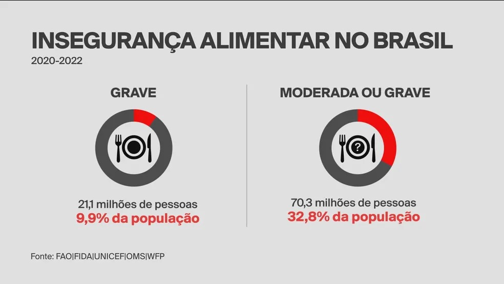

Um relatório publicado pela ONU nesta quarta-feira (12) mostra que a insegurança alimentar e a fome aumentaram no mundo. No Brasil, 1,5 milhão de pessoas passaram a fazer parte dessa realidade, que afeta mais de 70 milhões de brasileiros.
O Brasil tem 21 milhões de pessoas que não têm o que comer todos os dias e 70,3 milhões em insegurança alimentar. Segundo o relatório, são 10 milhões de pessoas desnutridas no país. No mundo todo, são 735 milhões de pessoas passando fome e 2,3 bilhões em situação de insegurança alimentar.
A insegurança alimentar moderada é quando as pessoas enfrentam incertezas sobre sua capacidade de obter alimentos e são forçadas a reduzir a qualidade e/ou a quantidade de alimentos que consomem devido à falta de dinheiro ou outros recursos.
A insegurança alimentar grave ocorre quando, em algum momento, as pessoas ficam sem comida, passam fome e, no caso mais extremo, ficam sem comida por um dia ou mais.
Os dados são do relatório sobre o Estado da Segurança Alimentar e Nutrição no Mundo (SOFI), publicado em conjunto por cinco agências especializadas das Nações Unidas - Organização das Nações Unidas para a Alimentação e a Agricultura (FAO), o Fundo Internacional para o Desenvolvimento Agrícola (FIDA), o Fundo das Nações Unidas para a Infância (UNICEF), a Organização Mundial da Saúde (OMS) e o Programa Mundial de Alimentos (WFP).
No Brasil, são 20,1 milhões de pessoas em situação de insegurança alimentar grave; 9,9% da população. Entraram para a estatística, desde o último levantamento, 5,7 milhões de brasileiros.
Ao todo, o relatório mostra que 70,3 milhões de pessoas no país nem sempre tiveram o que comer em quantidade suficiente. São as pessoas que estão em situação de insegurança alimentar moderada/grave. Nove milhões de brasileiros entraram para esta estatística desde a última divulgação da FAO/ONU.
Estastísticas da fome
➡️ A média dos últimos três anos (2020-2022) é que 1,5 milhão de brasileiros entraram para as estatísticas da fome, na comparação com o triênio 2019-2021;
➡️ Ao todo, são 10,1 milhões de brasileiros, o que representa 4,7% da população;
➡️Já no mundo, 735 milhões de pessoas (9,2% da população) não tiveram o que comer nos últimos três anos; 122 milhões de pessoas a mais que 2019.
“A missão do governo é garantir que possamos tirar o Brasil do mapa da fome. Todos os ministérios estão trabalhado integrados com estados, municípios e entidades para garantir isso. Em breve será lançado o Plano Brasil Sem Fome, com o objetivo de reduzir a pobreza e a extrema pobreza”, disse o ministro Wellington Dias, do Ministério de Desenvolvimento Social.
Segundo o ministro, 18,5 milhões de famílias, sendo 43,5 milhões de brasileiros, já elevaram a renda em 2023 com o novo Bolsa Família.